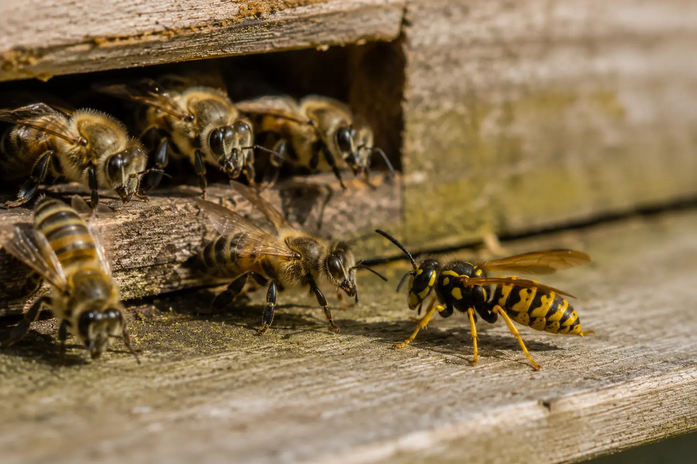

Pests, wasps and weak colonies
Wasps Attacking Beehives: Signs, Risks and How to Protect Your Colony
Last updated: 1 May 2026

Wasps are a normal part of the late-summer and autumn apiary environment, but they can become a serious problem when they repeatedly test a hive entrance or target a weak colony. Strong honey bee colonies can usually defend themselves, while small colonies, nucs and late-season splits may be overwhelmed much more quickly.
A wasp attack can look similar to robbing behaviour because both involve fighting, pressure at the entrance and attempts to steal food. The difference is that wasps are predators and scavengers as well as thieves. They may kill bees, carry away parts of bees, take brood and exploit any weakness in the colony.
Signs wasps are attacking your hive
The most obvious sign is repeated wasp activity at the hive entrance. A single wasp passing through the apiary is not usually a crisis, but wasps hovering persistently, testing the entrance and returning again and again should be taken seriously.
You may see honey bees and wasps fighting on the landing board or falling to the ground together. Wasps may try to dart past guard bees, enter through cracks, or search around the sides and roof for another way in. Dead bees, dead wasps and increased defensive behaviour can all appear near the entrance.
In severe cases, the colony may become noisy, disorganised or unable to hold the entrance. If wasps are walking in and out freely, the colony is already in difficulty.
What happens during a wasp attack
Wasps are opportunistic. They may attack individual bees, steal honey or syrup, take brood, and exploit any weakness in the hive. A strong colony can usually repel them, but a weak colony may not have enough guard bees to defend a wide entrance.
Once wasps discover that a hive is vulnerable, they can return repeatedly. This can weaken the colony further, reduce stores, increase stress and open the door to robbing by other honey bees as well.
The situation is most dangerous when the colony is already small, queenless, short of bees, affected by varroa, or going into autumn below strength.
Wasp attack versus robbing bees
Wasps are usually easier to identify by their yellow and black markings, narrow waist and more predatory behaviour. They may attack bees directly or carry pieces away. Robbing bees are honey bees from other colonies, and the entrance may show fast darting flight, fighting between bees and attempts to force entry.
Both problems can happen at the same time. Spilled syrup, exposed honey, wet supers or a weak colony can attract wasps and robber bees together. If you are unsure, focus first on reducing the entrance and removing attractants.
Compare with robbing behaviour in bees.
Which colonies are most at risk?
Weak colonies are most vulnerable. This includes small nucs, late-season splits, queenless colonies, colonies with poor brood patterns, colonies affected by varroa and hives that have recently been robbed or disturbed.
Large entrances are also a risk where the colony does not have enough bees to guard them. A full-size entrance may be fine for a strong summer colony, but too much for a small or weakening colony in late summer or autumn.
If wasps are repeatedly targeting one hive, do not only treat it as a wasp problem. Check whether the colony is weak, queenless, short of stores, suffering from varroa, or otherwise unable to defend itself.
How to protect your hive from wasps
The most useful immediate step is to reduce the entrance so the guard bees have a smaller area to defend. Entrance blocks, reducers or wasp guards can help when used sensibly. Make sure the colony still has enough ventilation and space for normal traffic.
Remove attractants from the apiary. Do not spill syrup or leave feeding equipment exposed. Do not leave wet supers, honey frames, wax scrapings or comb outside. Feed carefully, preferably in a way that does not advertise food to wasps or neighbouring colonies.
Prevention is easier than rescue. Colonies going into late summer and autumn should be queenright, reasonably strong, well-managed for varroa and not left with more entrance space than they can defend.
When wasps become a serious problem
Wasp pressure becomes serious when attacks continue throughout the day, bees cannot defend the entrance, wasps enter and leave freely, or the colony rapidly loses strength. If you see a sudden increase in dead bees, frantic entrance activity or stores disappearing, act quickly.
A serious wasp attack often reveals an underlying colony problem. The hive may be too weak, queenless, affected by varroa or short of bees. Reducing the entrance helps, but the colony itself still needs to be assessed once the immediate pressure is under control.
Related guide: weak colony bees.
What to do if your colony is being overwhelmed
Reduce the entrance immediately and close obvious gaps. Remove any exposed food, stop careless feeding and avoid opening the hive unless you need to act. If feeding is necessary, do it carefully and avoid spills.
If the colony is very weak and cannot defend itself even with a reduced entrance, consider whether it should be combined with a stronger colony or reduced into a smaller space. Moving a colony may help in some circumstances, but it should not be used as a substitute for dealing with weakness, entrance size and attractants.
If the colony continues to decline, check for underlying issues such as varroa collapse, queen failure, starvation or robbing.
What not to do during wasp pressure
Do not leave supers, frames, honey, wax scrapings or feeding equipment exposed near the apiary. Do not keep opening a weak hive while wasps are already targeting it. Each inspection can release more scent and make the problem worse.
Do not leave a small colony with a wide entrance just because it is the standard hive setup. The entrance should match the strength of the colony and the level of pressure outside.
Do not assume wasps are the only problem. If one colony is being singled out, it may already be weak, queenless, short of stores or affected by disease or varroa.
How HiveTag can help
HiveTag can help you record wasp pressure, entrance reductions, feeding, colony strength and follow-up checks. These notes make it easier to see whether wasp problems are linked to weak colonies, feeding mistakes, late-season splits or recurring pressure in a particular apiary.
If a colony is attacked, record what you saw, what action you took and whether the colony recovered. This gives you better information for next autumn.
Learn more: HiveTag.
Wasps Attacking Beehives FAQ
Wasp pressure is usually worst in late summer and autumn, when wasp colonies are large, natural food changes and weak bee colonies may struggle to defend their entrances.
Wasps are usually more yellow and black, have a narrower waist and may hunt bees directly. Robbing bees are honey bees from other colonies and usually show fast darting flight, fighting and attempts to force entry.
Yes. Strong colonies can often defend themselves, but weak colonies, nucs and late-season splits can be overwhelmed if wasps repeatedly enter the hive and take brood, honey or adult bees.
Reduce the entrance immediately, close gaps, remove exposed honey or syrup, avoid unnecessary inspections and make the colony easier to defend. If the colony is very weak, further action such as combining may be needed.